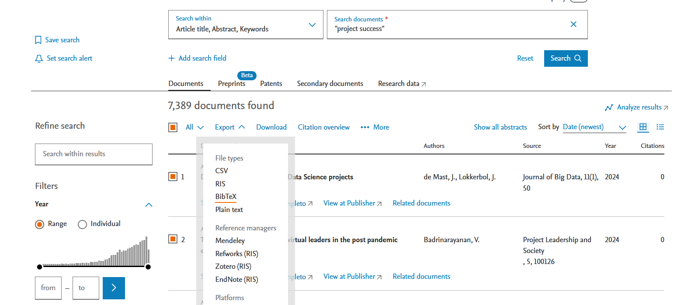
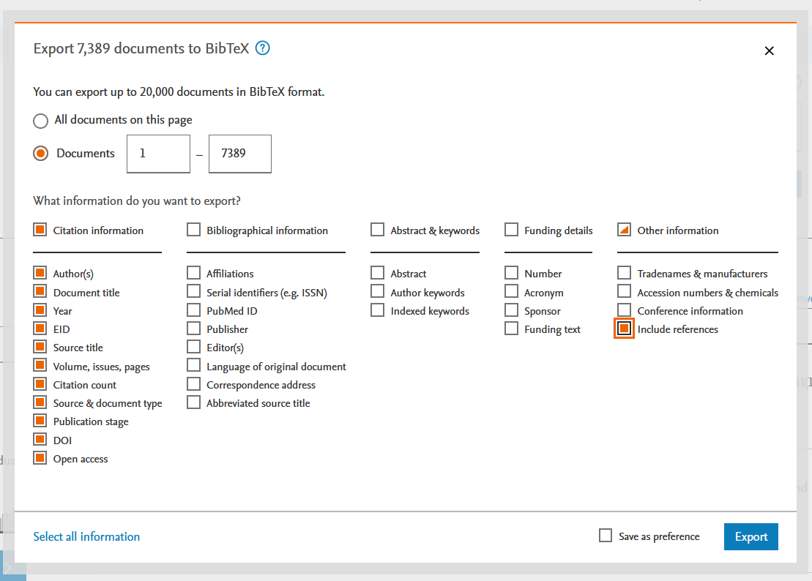
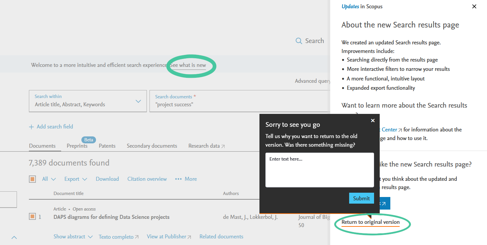
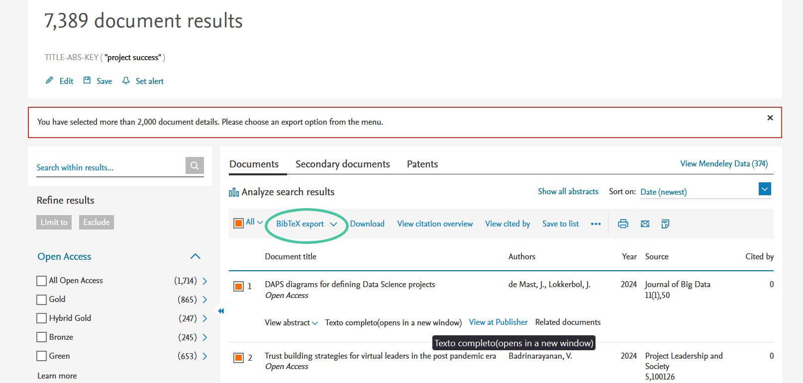
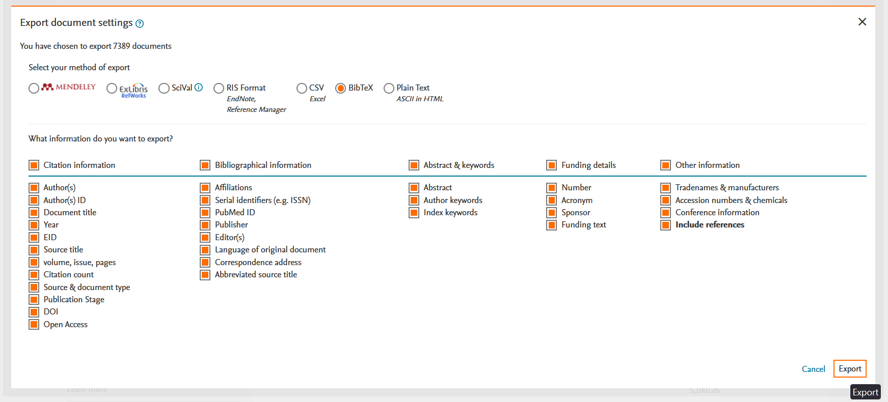
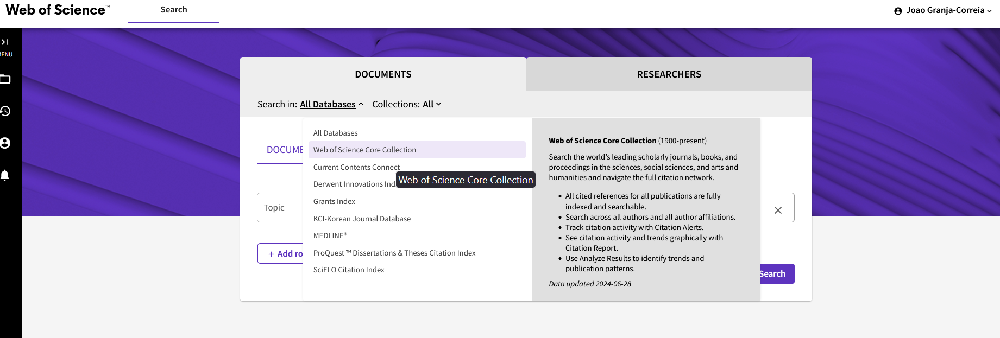
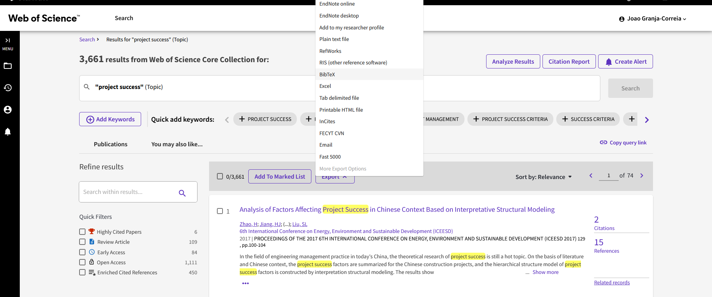
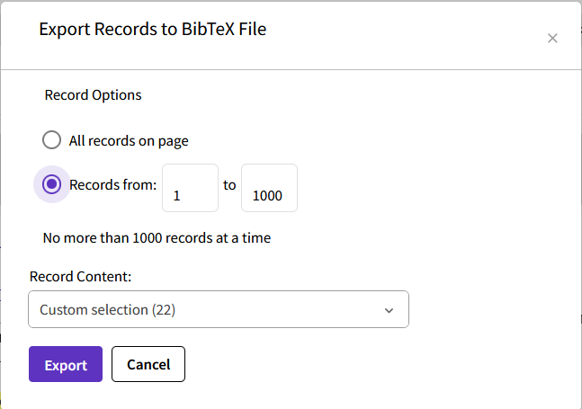
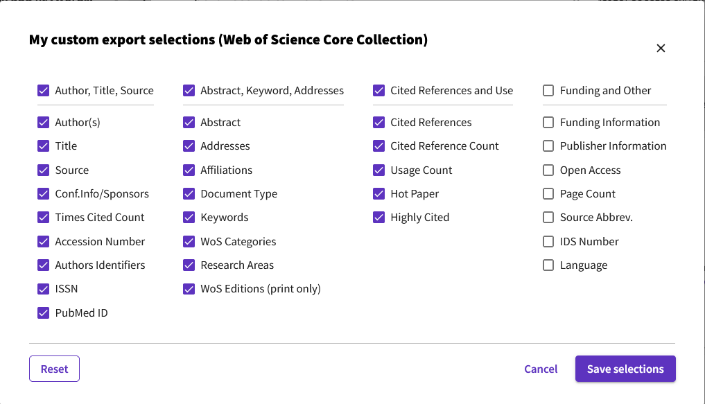

Navigating Bibliometric Data Extraction from WOS and Scopus
A step-by-step guide to extracting and formatting bibliometric data from WOS and Scopus for analysis with the bibliometrix package in R.
One of the studies I am developing is a bibliometric study on the evolution of the terms “project success” and “project performance” in academic literature. Bibliometric studies allow for the quantitative analysis of academic publications, enabling researchers to identify trends, patterns, and the impact of specific terms over time. This approach helps to uncover the most influential works, key authors, and prominent journals in the field, providing a comprehensive overview of the academic discourse surrounding critical concepts, and areas of research. It is a type of research, that you perform when you want to get an over-view of a research area and identify research gaps.
However, as with most research, one of the main hurdles to overcome is obtaining the data. In bibliometric studies, unlike empirical studies, the required data can be sourced from high-quality bibliographic databases such as Web of Science or Scopus. To access these databases, you first need a premium account, which is typically available through most academic institutions. Once you have access to the paid versions of these websites, finding and downloading the data in the correct format can still be challenging. Having spent a significant amount of time figuring out how to do this, I want to save you, the reader, this effort. The goal of this post is to provide you with a concise guide on how to download bibliometric data correctly and efficiently.
Firstly, to conduct a bibliometric analysis, you not only need a list of the articles relevant to your research area, but you also need the list of articles each one of them cites. This is essential for building co-citation networks, and other types of analysis, and it has to be in a format that your bibliometric analysis software can use. In my case, I’ll be using the bibliometrix package in R, so I need the references in BibTeX format. A regular reference export from the platforms won’t cut it because the citation reference lists can get very large and complex. You’ll need to navigate the menus carefully to get everything in the right format.
Note: This tutorial assumes that you have a premium account for the platforms in question
Scopus
Once you enter Scopus and perform your search, you will be greeted with the new search menu, as shown below.

Here’s where it can get confusing: it appears that you can export the results to BibTeX without any issues.

Here’s the improved version:
Once you press export, you are taken to a menu where you can select what you want to export. It even has an option to “Include references.” You might think you can export all the references in one go. However, after exporting and opening the BibTeX file, you’ll notice that the reference field isn’t there. I don’t know if this is an error with the new interface or if it’s by design (though I haven’t figured out what the “references” option can refer to). The end result is that the exported file doesn’t contain the references you need. You search online and can’t find an answer, and Scopus tutorials don’t help. So, you end up wasting hours trying to figure it out. I’m here to spare you that trouble.

So what you need to do is navigate to the old search menu, which isn’t at all intuitive. First you need to press “See what is new”, and then “Retun to original version”.

Once you do that, you will have the “BibTex export” option, that opens a different export menu.

When exporting entries with references, in Scopus, you’re limited to 2000 entries at a time. I recommend filtering your list by publication year, creating bundles of years that each have fewer than 2000 entries. Once you’ve exported the BibTeX files, you can combine them into a single file by opening them in a text editor and copying and pasting the content at the end of the main file. The order doesn’t matter, as BibTeX includes a field for the publication date. Once you have a single file, you can start analyzing it in your software of choice.
Web of Science
The issue with Web of Science (WOS) is slightly different. Only the WOS Core Collection includes references. If you use the default option, All Databases, you won’t even see the option for BibTeX and reference export. It can take a while to figure out why this is the case. So you need to go with the Wos Core Collection from the start.

After that, it is relatively intuitive. You need to select export, and them go with the BibTex format.

With reference information, you can only export 1000 records at a time. I recommend exporting in batches of 1000, ensuring you keep track of where you are. Otherwise, you might end up having to re-export everything or, worse, miss some records without realizing it.

Don’t forget to select the Cited References and Use option, as this is the key feature we need.

Again, once you have all the BibTex files, you can just combine them by copying and pasting them into one big file.
Note on the BibTex files
Once you combine all the BibTeX files into one, you will end up with a relatively large file that can be a few hundred megabytes in size. Do not combine the files from Scopus with those from WOS into one file, as they have slightly different formats. If you plan to use bibliometrix for analysis, you will need to import them separately. Once they are imported, you can merge them and remove duplicates.
As I progress with my analysis, I will soon make a more detailed post on how to use bibliometrix.
Citation
@online{granja-correia2024,
author = {Granja-Correia, João},
title = {Navigating {Bibliometric} {Data} {Extraction} from {WOS} and
{Scopus}},
date = {2024-07-03},
url = {https://joao.granja-correia.eu/blog/blog_20240701_bibliometric_data/},
langid = {en}
}